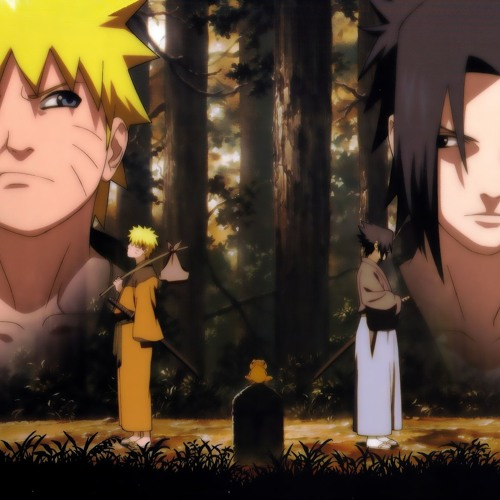

Naruto Shippuden Opening 1 - Hero's Come Back

Tooku de kikoeru koe wo HINTO ni
Hitori mata hitori tachiagaru doushi
Kurikaesu dake no fudan doori kutsugaesu
Junbi iize Are You Ready ?
Karadajuu furuwasu shindou ni hageshiku uchinarase yo Stomping
Taezu tsukiugokasu Call Me kawarazu yuruganu
Tsukamu Story Come On !!
Everybody Stand Up ! Agero kyou ichiban no jikan da
Me ni mo tomoranu SUPIIDO HANTAA
Daremo ga mina toriko kamban Yeah ! (Come On !)
Everybody Hands Up ! Mata shita na Hero's Come Back !!
Zujou kazoe yubioru Count Down
Ikuze Three, Two, One Make Some Noise !
Mou tashou no RISUKU wa kakugo desho
Nankai koronda tte tatsu (Get It On)
Nareai ja naize kamihitoe no SESSHON
Iriku nda kanjou kizukiageta kesshou
Wakiagaru kansei ga yuuki to naru
Tachiagareba ima ijou kurushimi tomonau
Soredemo saigo wa kitto warau
Subete sarau shouri to kansei
Everybody Stand Up ! Agero kyou ichiban no jikan da
Me ni mo tomoranu SUPIIIDO HANTAA
Daremo ga mina toriko kanban Yeah ! (Come On !)
Everybody Hands Up ! Mata shita na Hero’s Come Back !!
Zujou kazoe yubioru Count Down
Ikuze Three, Two, One Make Some Noise !